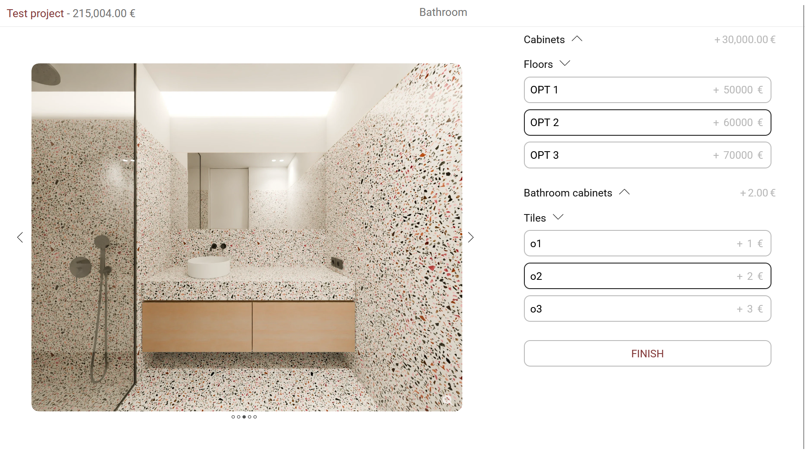
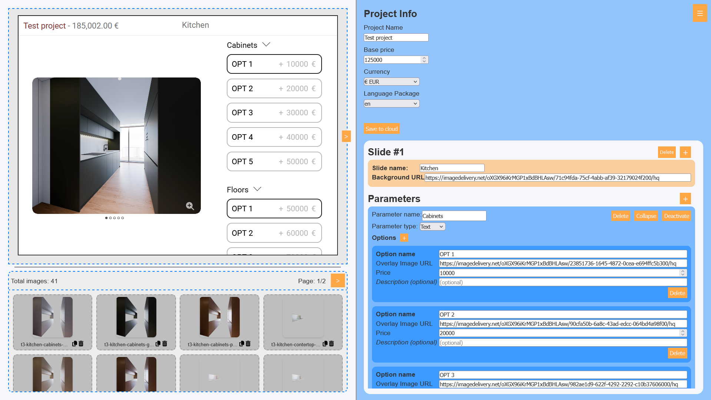

MMEIRELES Arch Configurator
Komplexní webový konfigurátor interiérů vyvinutý pro portugalskou developerskou společnost. Zodpovídal
jsem za kompletní návrh i implementaci frontendové i backendové části aplikace. Systém umožňuje klientům
interaktivně upravovat dispozice, materiály a vizuální prvky bytových jednotek v reálném čase. Důraz byl
kladen na přehledné UI, škálovatelnou architekturu a bezproblémovou integraci do interních procesů
developera.
Více o klientovi:
https://mmeireles.com/
Ukázkový web:
Example widget
Widget pro konfiguraci nabízených produktů

Souhrn objednávek s možností generování automatických faktur

Administrativní rozhraní pro správu obsahu a objednávek

Rozhraní pro tvoření a úpravu nabízených produktů, materiálů a vizuálních prvků
